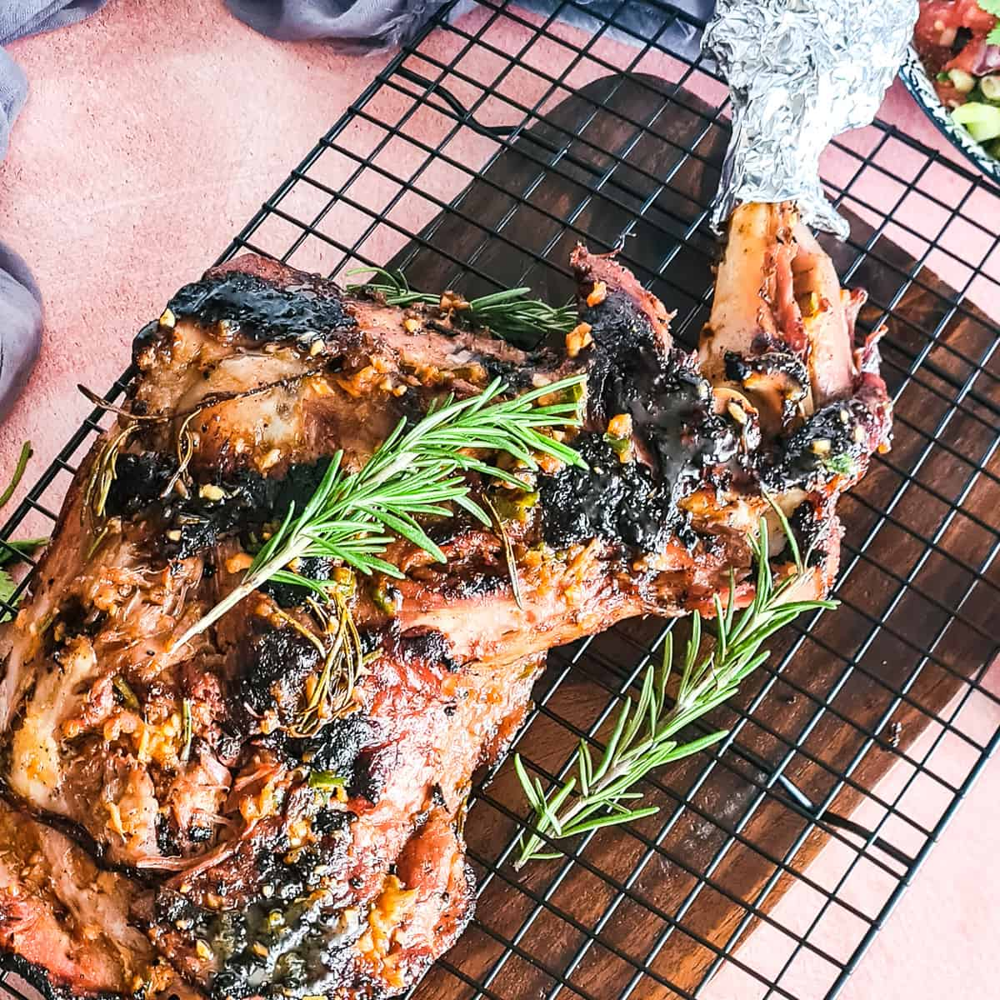

PREPARING MBUZI CHOMA
Ingredients
- 5.5 lbs goat meat (approximately 2.5kgs)
- 10 cloves garlic
- 1 bulb whole garlic cut across in the middle
- 1 red or white onion large
- 1 lemon juiced
- ⅓ piece ginger
- ½ cup extra virgin olive oil or preferred cooking oil
- 1 tablespoon ground cumin
- 2 tablespoon ground paprika
- 1 tablespoon salt
- 2 stock cubes
- 6 sprigs fresh rosemary
- 2 bird-eye chillis de-seeded
- 1-2 tablespoon honey (optional - for basting)
- 2 tablespoon water
Instructions
- Prepare the marinade- in a bowl, combine garlic, ginger, onion, lemon juice, olive oil, cumin, paprika, salt, stock cubes, some rosemary, and chili. Use a food processor or blender, to save on time but take care not to process it too much. It should still retain some texture.10 cloves garlic,1 red or white onion,1 lemon,⅓ piece ginger,½ cup extra virgin olive oil,1 tablespoon ground cumin,2 tablespoon ground paprika,1 tablespoon salt,2 stock cubes,6 sprigs fresh rosemary,2 bird-eye chillis.
- Use a knife to make slits 2 inches or 5 cm apart on the goat leg. Transfer the meat to a bowl and toss it with half of the marinade. Set the other marinade aside, to be used in basting the nyama choma.Gashes on the surface of goat meat, in preparation for marination.
- Massage the marinade into the meat, making sure to also cover the slits. Cover the meat with aluminum foil and allow it to marinate overnight or for at least 2 hours.
How to marinate goat meat for grilling
- Remove the marinated goat meat from the fridge and allow it to come to room temperature for at least an hour, before setting it on the barbecue. During this time, prepare your grill and set it to high. Cover your grill with ashes if using a charcoal grill, to prevent it from getting too hot.
- Rub a few tablespoons of oil on a piece of aluminum foil then set it aside. Grill the meat on high for approximately 3 minutes on each side, or until it attains a proper color then transfer it to the prepared aluminum foil. Top it with the reserved marinade, then add more layers of aluminum foil at the bottom, so you end up with a triple layer.
- Place two sprigs of rosemary and the bulb of garlic on top of the goat leg. Cover the meat loosely with foil so it resembles a tent.
- Add some water to a baking tray and place the meat on top of the baking tray. Transfer it to the barbecue grill then cover the lid, trying to maintain the temperature at medium-low. Grill for one and a half hours, turning from time to time.
- Once the time is up and the meat is almost done, mix the honey with 2-3 tablespoons of hot water to make a glaze. Uncover the meat and baste it with the honey glaze. Continue to grill for a further 15-30 minutes or until the desired brownness has been achieved and the juices run clear, or it has an internal temperature of at least 150-160 degrees F. 
- Once cooked, transfer the meat to a tray and allow it to rest for 10-20 minutes before carving. Serve nyama choma with ugali, sukuma wiki, and kachumbari, or your favourite dishes.
Oven method
- To make nyama choma in the oven, simply marinate the meat and cover it with aluminum foil in preparation for roasting, as per the instructions above. Next, preheat the oven to 170° C/ 365° F (standard) or 150° C fan then lay the meat on a baking tray. Place in the oven and slowly roast for 4.5 hours.
- Once the cooking time is over, get the meat out of the oven and remove the aluminum foil. Make the glaze by mixing honey with 2-3 tablespoons of hot water. Uncover the meat and baste it with the honey glaze.
- Return the basted meat to the oven and broil each side on high for 5-10 minutes, or until the desired level of browness has been obtained.
- Remove the meat from the oven and allow it to cool for 20 minutes, before carving to prevent the juices from running out.
- Serve the nyama choma with mukimo, ugali, kachumbari or your favorite side dish.